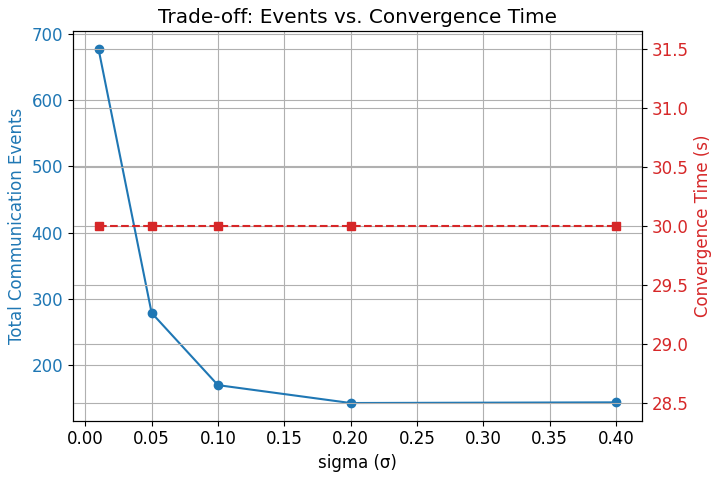
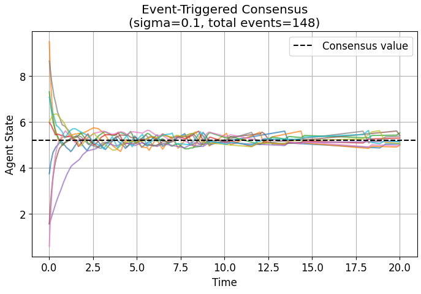

COMMUNICATION-EFFICIENT EVENT-TRIGGERED CONSENSUS IN MULTI-AGENT SYSTEMS


Project Overview
This project explores communication-efficient consensus protocols in multi-agent systems using event-triggered control. A simulation framework was developed to compare continuous consensus with multiple event-triggered strategies, including static threshold, decaying threshold, and neighbor-relative triggering mechanisms. The goal is to reduce communication overhead while ensuring convergence and avoiding Zeno behavior.
Python
NumPy
Matplotlib
NetworkX
Control Systems
Multi-Agent Systems
Technical Implementation
Multi-Agent System Modeling:
- Modeled agents as nodes in a graph using NetworkX
- Implemented consensus dynamics based on Laplacian matrices
Continuous Consensus:
- Implemented baseline continuous communication between agents
- Verified convergence to global average state
Event-Triggered Consensus:
- Implemented static threshold triggering mechanism
- Developed decaying threshold strategy for improved convergence
- Implemented neighbor-relative triggering based on local disagreement
Results & Key Insights
Key Results:
- Achieved up to 99% reduction in communication events
- All methods converged to the same consensus value
- Demonstrated trade-off between communication and convergence speed
- Verified absence of Zeno behavior (positive inter-event times)
Insights:
- Higher thresholds reduce communication but slow convergence
- Decaying thresholds improve convergence at the cost of communication
- Network topology significantly impacts communication load